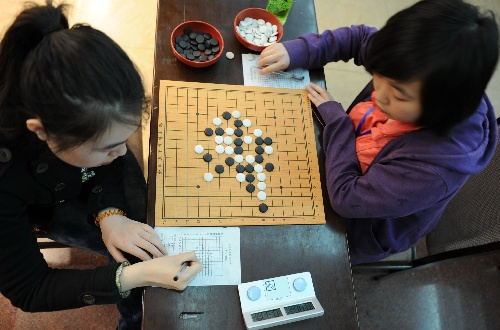

2011全团赛新华社记者拍摄照片
首页
五子棋新闻
#1 2011全团赛新华社记者拍摄照片 作者：有志青年 发表时间：2011-4-30 12:48:17




［此帖子已被 有志青年 在 2011-4-30 12:49:37 编辑过］
［此帖子已被 有志青年 在 2011-4-30 12:52:04 编辑过］
［ 闹静 于 2011-4-30 17:17:08 时花20金币送鲜花一朵］
［ 聚贤联盟特使 于 2011-5-2 5:51:57 时花20金币送鲜花一朵］
#2 Re:2011全团赛新华社记者拍摄照片 作者：梧桐风 发表时间：2011-4-30 12:58:04
这次还有新华社啊
#3 Re:2011全团赛新华社记者拍摄照片 作者：最爱绿茶 发表时间：2011-4-30 12:59:51
不错不错 
#4 Re:2011全团赛新华社记者拍摄照片 作者：安娜制作所 发表时间：2011-4-30 13:31:54
不错吆,有机会上央视. 来竞猜一下,哪位选手第一个上镜?
#5 Re:2011全团赛新华社记者拍摄照片 作者：None 发表时间：2011-4-30 14:16:24
新华社的相机就是好
［ 路痴 于 2011-4-30 19:27:09 时花20金币送鲜花一朵］
#6 Re:2011全团赛新华社记者拍摄照片 作者：聚贤联盟特使 发表时间：2011-4-30 18:40:49
激动・・・・
#7 Re:2011全团赛新华社记者拍摄照片 作者：老奶奶 发表时间：2011-5-1 17:05:37
 臭鸡蛋怎么和我想的一样
臭鸡蛋怎么和我想的一样
#8 Re:2011全团赛新华社记者拍摄照片 作者：松痕 发表时间：2011-5-2 9:01:00
这照片拍的，看样子是小孩子和女孩子的游戏。。。。
#9 Re:2011全团赛新华社记者拍摄照片 作者：老奶奶 发表时间：2011-5-2 23:08:30
靠 怎么就送鸡蛋一人鲜花！！